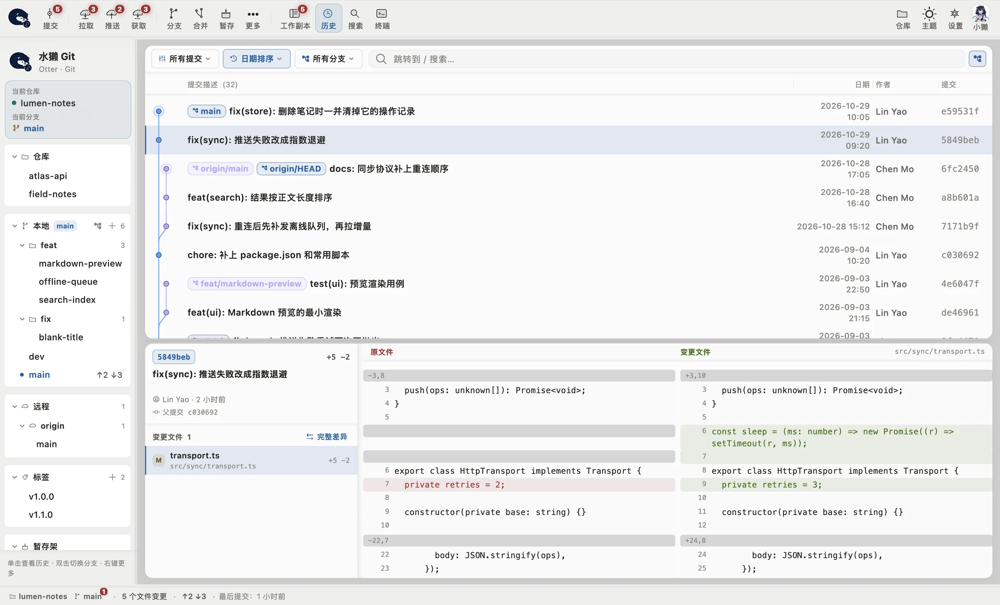
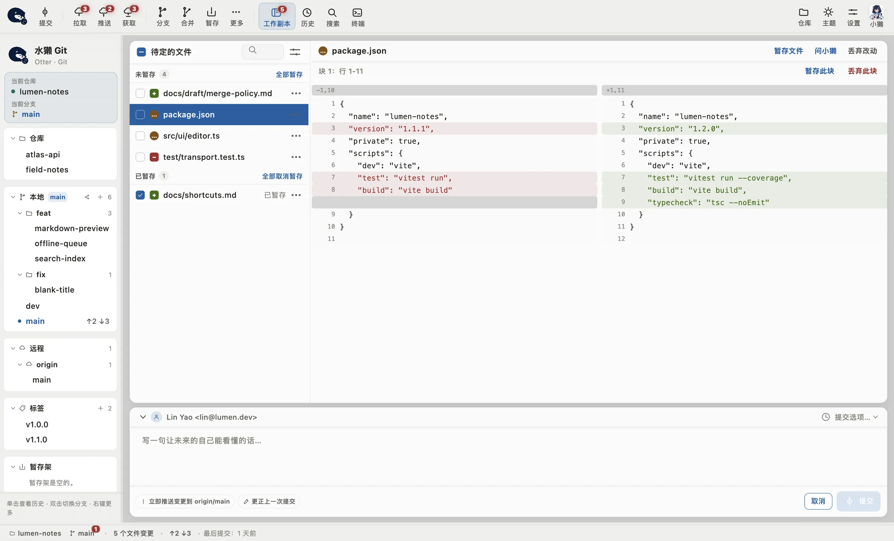
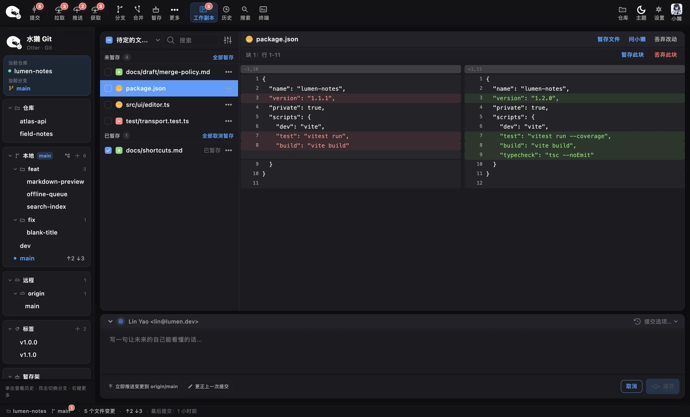
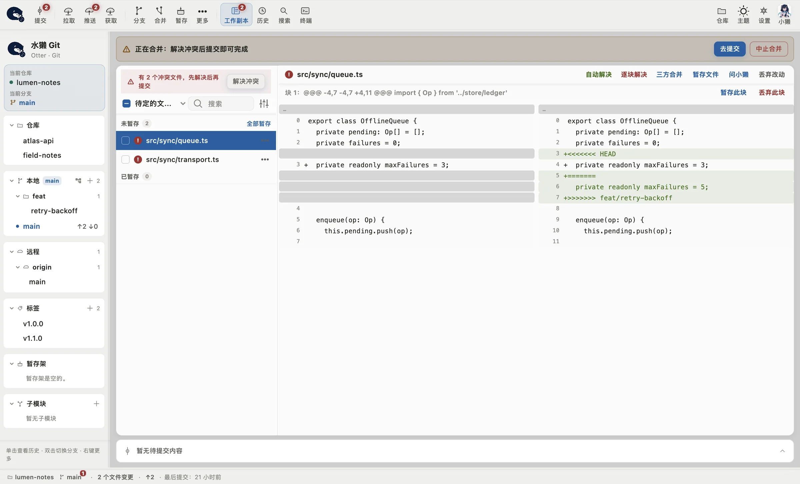
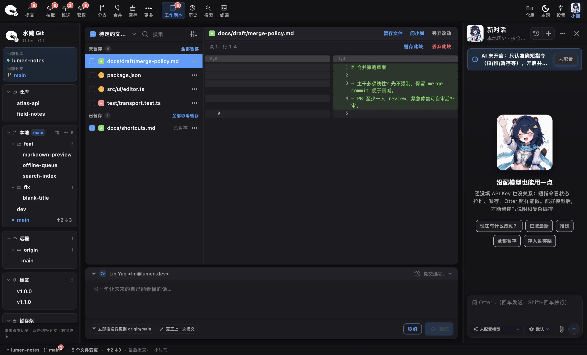
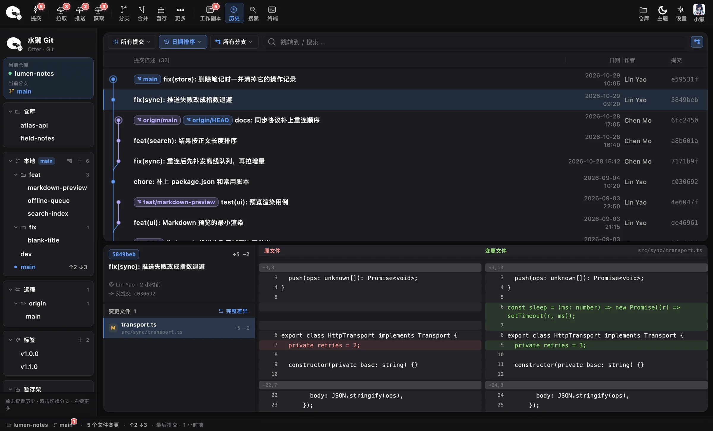

01提交历史
顺着泳道，看清分叉
每个分支一条泳道。本地 main 停在哪、origin/main 走到了哪、后来谁合进了谁，图上都画着。点开一条提交，下半屏就是这次改了什么。
- 搜提交说明、作者或哈希，
⌘3直接打开搜索 - 在提交上点右键，可以遴选、变基、创建补丁

推送被拒，终端只回你一句 non-fast-forward。在水獭 Git 里，侧栏那一行写着
↑2 ↓3，两个提交还没推，远程多了三个。历史、改动和冲突摊在同一个窗口里，看明白了再动手。


两句话讲的是同一件事。前一句你得复制下来去搜，后一句扫一眼就懂，先把远程那三个拉下来，再推。
lin@studio lumen-notes % git push To github.com:lumen-dev/lumen-notes.git ! [rejected] main -> main (non-fast-forward) error: failed to push some refs to 'github.com:lumen-dev/...' hint: Updates were rejected because the tip of your hint: current branch is behind its remote counterpart. hint: use 'git pull' before pushing again.
每个分支一条泳道。本地 main 停在哪、origin/main 走到了哪、后来谁合进了谁，图上都画着。点开一条提交，下半屏就是这次改了什么。
⌘3 直接打开搜索
新旧两栏按行对齐。这边多出几行，对面就空出几行，后面的代码不会整段错位。一个文件改了三处，只想先交其中一处？点那一块右上角的「暂存此块」，另外两处留在工作区。
拉下来撞上冲突，文件列表会标出是哪几个文件。只有一边改过的块，点「自动解决」就合好了。两边都动过的，用「逐块解决」，留我的、留对方的，或者两边都要。想看全貌就打开「三方合并」，本地、远程和合并结果并排摆着。

>>>>>> feat/retry-backoff 的冲突块，上方有「自动解决」「逐块解决」「三方合并」" />小獭住在窗口右边。看状态、拉取、推送、暂存、存进暂存架，这些短指令不配模型也能用。配上模型以后，写提交说明、起草 PR 描述、把「提交并推送」拆成几步跑完，都可以交给它。
权限深度分三档，出厂是中间那档
每次写操作都确认
日常直跑，拉推等高危确认
沙箱内自动跑，不打断
默认档下，强制推送、硬重置、丢弃改动都要你单独点头。冲突还没解决完就想提交？哪一档都会拦下。

填接口地址、API Key 和模型名称，兼容 OpenAI 接口的服务都能用。每个模型单独选速率，精确、均衡或创意。
每个模型记着请求了几次、一共用了多少令牌，点开就是明细。
提交约定、分支习惯写进仓库记忆，这个仓库里的每次对话都会带上。仓库里有 AGENTS.md 的话，它也会去读。
改到一半要去别的分支救火，先把改动存进暂存架，回来再取。
不知道哪次提交把功能弄坏了，标一个好的、一个坏的，git bisect 帮你对半往下找。
提交落错了分支，创建补丁带走，到对的分支上再应用。
worktree 和 submodule 各有管理界面，添加、更新、移除点几下就行。
工具栏「更多」里，大文件和 Git-flow 分支流程都有入口。
分支推上去，接着就能创建拉取请求，GitHub、Gitee、GitLab、Bitbucket 的远程都认。
主窗口不开，也看得到可拉取几个、未推送几个，顺手点一下同步。
默认每 8 秒在后台获取一次远程，间隔能调，嫌烦也能关。
远程账号存进系统钥匙串，推私有仓库不用每次输密码。
跟随系统，或者自己指定。菜单里点「切换主题」当场就换，不用重启。界面语言在中文和 English 之间切。

画面全部取自 App 实机截图，旁白跟着画面走。点章节可以直接跳过去。
macOS 12 及以上，Apple Silicon（M 系列芯片）
DMG 安装包，拖进「应用程序」就能用。已签名、已公证，第一次打开不会被系统拦下。
下载 macOS 版Windows 10 / 11，x64
zip 压缩包，解压后双击 otter_git.exe。预览版还没做代码签名，SmartScreen 拦下的话，点「更多信息」，再点「仍要运行」。
两个版本都要本机装好 git，终端里输入 git --version 能看到版本号就行。Intel 芯片的 Mac 暂时没有安装包。
SHA256：macOS dmg c6d5a349…4a110 · Windows zip 9d733e13…cc81bc，完整值在 Release 页。
不用。没有内购，没有订阅，也没有专业版。小獭用的模型由你自己接，模型费用你直接跟服务商结，App 不经手。
出厂是「默认」档，日常操作直接跑，拉取、推送这类会先问你，收不回来的操作每次单独确认。嫌它问得多，可以调到「完全信任」；想每步都看，就调到「询问」。冲突没解决完的提交，哪一档都会拦。
仓库读写都在本机，用的是你装的 git。不配模型的时候，小獭的短指令也在本机跑。配了模型、你跟它对话时，它要用到的内容会发到你填的那个接口地址。
Windows 10 / 11（x64）有预览版。托盘、拖放、深色跟随这些交互还没在真机上全部验过，遇到问题欢迎反馈。M 系列之前的 Intel Mac，目前还装不了。
要。水獭 Git 调用的是你电脑上的 git，没装就先装一份。装了好几份的话，设置里可以指定用哪一个。
各有各的好。水獭 Git 在对比、冲突和小獭这几块花的力气最多。装上试试，不顺手删掉就是。
水獭睡觉时会牵着同伴的手，怕睡着以后被水冲散。分支一多也容易走散，总得有谁帮你盯着。